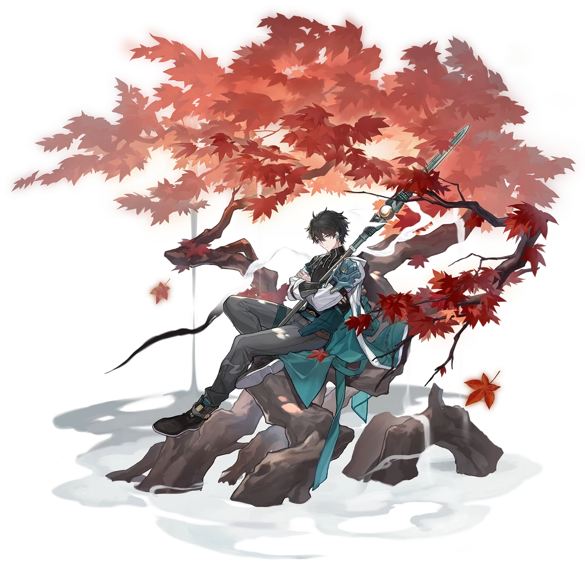

Descripcion del personaje
Dan Heng es uno de los primeros personajes de cuatro estrellas que tendremos de forma gratuita en cuanto comencemos nuestras aventuras en Honkai Star Rail, es un personaje de la Vía de la Cacería y por lo tanto su kit de habilidades está basado en hacer un daño elevado a un único enemigo.
Además de realizar un daño bastante decente con su Habilidad Básica y especialmente con su Habilidad Definitiva, Dan Heng también tiene ciertos efectos que pueden potenciar su daño y sabotear al enemigo: su Habilidad Básica puede llegar a ralentizar al objetivo que golpee, su Habilidad Definitiva hará un daño superior si afecta al enemigo con el estado de ralentización que hemos mencionado antes y si un aliado utiliza una Habilidad Básica sobre él potenciará su penetración a la Resistencia de Viento de los enemigos.
Dan Heng también posee una Técnica que le favorecerá mucho al empezar el comienzo del combate, ya que aumentará su ATQ en una buena medida durante tres turnos. Como pueden ver, a pesar de ser un personaje inicial tiene muchas formas de potenciar su daño y nos dará bastante de que hablar si lo usamos bien entre que conseguimos un personaje de cacería de 5 estrellas más poderoso.
Introduccion al personaje
 Dan Heng forma parte del Expreso Astral, un grupo que viaja entre planetas y dimensiones, resolviendo problemas relacionados con el poder del Honkai. Aunque es reservado, demuestra ser un aliado leal y confiable. Tiene habilidades de combate centradas en ataques de largo alcance y control de multitudes, lo que lo convierte en un personaje útil en el combate estratégico.
Dan Heng forma parte del Expreso Astral, un grupo que viaja entre planetas y dimensiones, resolviendo problemas relacionados con el poder del Honkai. Aunque es reservado, demuestra ser un aliado leal y confiable. Tiene habilidades de combate centradas en ataques de largo alcance y control de multitudes, lo que lo convierte en un personaje útil en el combate estratégico.
En su historia personal, Dan Heng es un Vidyadhara, una raza misteriosa con habilidades relacionadas con la longevidad y la reencarnación. Tiene un pasado oscuro y un vínculo complejo con su identidad anterior, lo que le añade una dimensión intrigante a su desarrollo dentro del juego.

Calidad del personaje

VIA del personaje
Caceria

Estadisticas del personaje
- PV: 882
- ATQ: 546
- DEF: 396
- VEL: 110